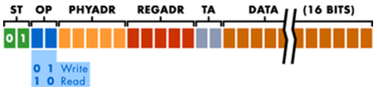
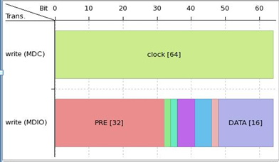

Defining a new Protocol: MDIO
About this task
This task is about creating a MDIO protocol definition from scratch. The following picture illustrates the starting point and the target of the procedure.

When done, your MDIO protocol in in smartest will be represented as follow:

Before you begin
Ensure you have the available license. The pins used in a protocol need to be defined in a dedicated port. Each port can just get one protocol assigned, but the same protocol can be used for several ports. Protocol Aware requires the use of STATEMAP in the wavetable. The state map section in the wavetable allows to uniquely map a transaction to a sequence of physical waveforms respectively interpreting a waveform sequence as transaction words.
Procedure
Results
The result of the MDIO protocol is shown from the Test Program Explorer after selecting View In Protocol.
What to do next
Use the Protocol in you testflow.
Functional changes
- Introduced in SmarTest 7.1.0